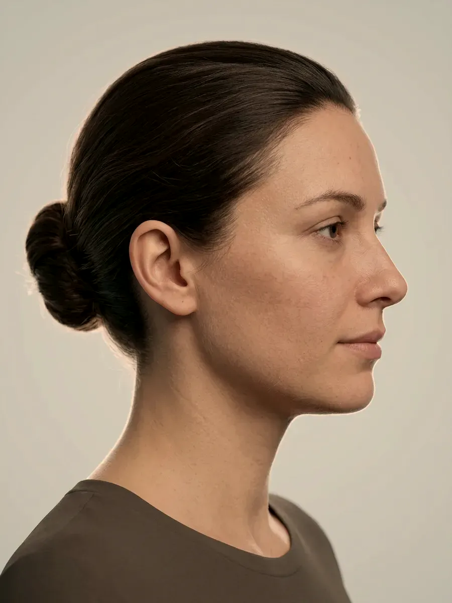
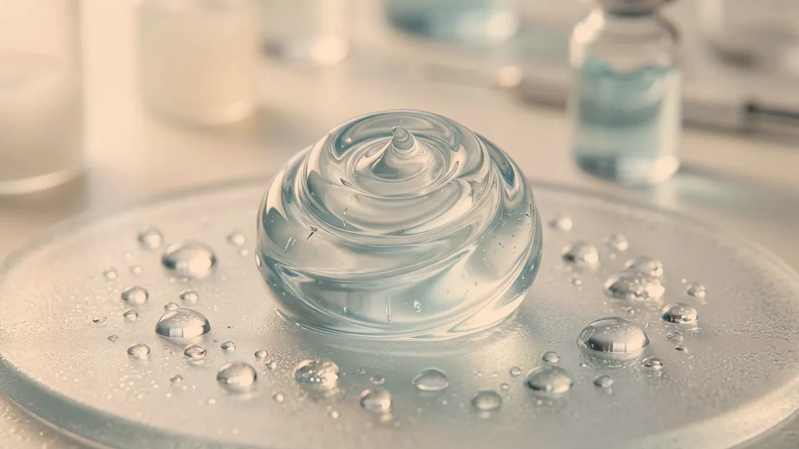

Bölge rehberi · Çene ve çene hattı
Silik bir çene hattının tek bir nedeni yoktur.
Kulak önünden çene ucuna uzanan hattın ne kadar keskin göründüğü; alt çene kemiğinin şekline, çene altında biriken yağa, derinin toparlanma gücüne ve çiğneme kasının kalınlığına bağlıdır. Her birinin yanıtı ayrı olduğu için önce hangisinin öne çıktığını anlamamız gerekir. Bu bölgede yüzünüze yandan bakmak, karşıdan bakmak kadar bilgi verir.
 Temsilî görsel · yapay zekâ ile üretildi
Temsilî görsel · yapay zekâ ile üretildi
Etkenler
Çene hattını belirginleştiren ya da silen ne?
“Jawline” dediğimiz şey, alt çene kemiğinin kulak önünden çeneye uzanan kenarı ve onu örten dokulardır. Bu hatta dair yakınmalar çoğu zaman tek bir işlemin adıyla gelir; oysa hattı dört ayrı etken şekillendirir. Aynı kişide birkaçı birlikte bulunabilir ve plan, en belirgin olanına göre yapılır.
Kemik yapısı ve çene açısı
Alt çenenin köşesindeki açı ve çene ucunun ne kadar önde durduğu, bu bölgenin iskeletini oluşturur. Bu iskelet yeterli destek vermiyorsa üstteki deri ve yağ ne kadar sıkı olursa olsun çizgi keskinleşmez. Böyle bir durumda yalnızca deriye yönelik işlemlerle ilerlemek sonuç vermez.
Çene altındaki yağ
Çenenin altında toplanan yağ, kemik yapısı yerinde olsa bile hattın üstünü örter. Bu birikim zayıf yapılı kişilerde de görülebilir; ailede benzer bir yapının bulunması sık rastlanan bir ipucudur.
Derinin toparlanma gücü
Deri esnekliğini yitirdikçe hat aşağıya doğru yumuşar. Burada ince bir ayrım vardır: gevşemiş bir deri ile gerçekten fazlalık oluşturmuş bir deri farklı şeylerdir. Deri fazlalığı söz konusuysa yanıt ameliyattır; hangisinin olduğunu muayenede belirleriz.
Çiğneme kasının kalınlığı
Kulak önünde, çenenin köşesinde yer alan çiğneme kası kalınlaştıkça alt yüz iki yandan genişler ve yüz oval görünümden köşeli bir görünüme geçer. Bunun en yaygın nedeni diş sıkmak ve gıcırdatmaktır; yani konu yalnızca görünüm değil, bir alışkanlık ve bazen bir ağrı meselesidir.
Ayrım
Muayenede çene bölgesine nasıl bakıyoruz?
Çene altındaki dolgunluğun nereden geldiğini, çiğneme kasının kalınlığını ve yüzünüzün profilini tek tek inceleriz. Aşağı indikçe soldaki kart, okuduğunuz başlığa uyum sağlar.

Temsilî görsel · yapay zekâ ile üretildiDolgunluğu oluşturan ne: yağ, gevşek deri ya da kas?
Çene altını iki parmakla tuttuğumuzda kalın ve yumuşak bir tabaka hissediliyorsa ve başınızı öne eğdiğinizde bölge daha da doluyorsa, yağ ön plandadır. Parmaklar arasında ince bir deri kalıyor, çekildiğinde kolayca uzuyor ve yavaş toparlanıyorsa, sorun daha çok gevşemedir.
Konuşurken boynun önünde beliren ve dinlenince kaybolan dikey bantlar ise deri altındaki ince bir kastan gelir. Çene ucu geride kalmışsa, altında hiç fazla yağ bulunmasa bile hat bulanık görünebilir; o zaman konu kemik desteğine kayar.
Diş sıkmanın yüzdeki izi
Çiğneme kasının kalınlaşmasına en sık diş sıkma ve gıcırdatma yol açar; bu çoğunlukla gece, uykuda ve farkına varılmadan olur. Sabah uyanınca çenede ağrı, şakaklarda baş ağrısı ya da dişlerde aşınma fark ediyorsanız bir diş hekiminin de görüşünü almak gerekebilir.
Kası normal kalınlıkta olan birinde kası gevşeten bir işlem çene hattını inceltmez. Bu yüzden önce kasın gerçekten kalınlaşıp kalınlaşmadığını muayenede yoklarız.
Karar yandan verilir
Bu bölgedeki yakınmaların büyük bir kısmı yandan bakınca anlaşılır. Çene ucunun öne ne kadar çıktığı, boyunla çene altının yaptığı açı, alt dudağın çene ucuna göre konumu; bunların üçü de ancak profilden okunabilir.
Geride kalan bir çene ucu burnu olduğundan iri, boynu da olduğundan kısa gösterebilir; bu durumda çene altına değil, çene ucunun desteğine bakmak gerekir. Muayenede başınızın duruşunu sabitler, yüzünüze hem sessizken hem konuşurken bakar ve sağ–sol farklarını not ederiz.
Bu ayrımın sonunda bazen “bu tabloya medikal estetik yöntemlerle yaklaşmak doğru değil” deriz. Sarkma ileri düzeydeyse ya da belirgin deri fazlalığı varsa sizi ilgili cerrahi uzmanlık dalına yönlendiririz; bunun nasıl işlediğini kapsamımızın sınırı sayfasında anlattık.
Seçenekler
Çene hattı için hangi seçenekler var?
Buradaki başlıklar, en belirgin etken bulunduktan sonra konuşulur. Etken yanlış belirlenirse doğru bir yöntem bile işe yaramayabilir.
Dolgu uygulamaları
Kemik desteğiŞişlik inince→Botulinum toksin
Kas kalınlığıMuayenede belirlenir→Bölgesel lipoliz
Yerel yağMuayenede belirlenir→Sıvı yüz germe
Bütüncül destekMuayenede belirlenir→HIFU
SıkılaştırmaMuayenede belirlenir→Altın iğne radyofrekans
SıkılaştırmaMuayenede belirlenir→Biyostimülan uygulamalar
Doku desteğiMuayenede belirlenir→Gençlik aşısı (skinbooster)
Cilt kalitesiMuayenede belirlenir→
Dolgu uygulamaları
Kemik desteği zayıfsa çene ucuna ve çene hattı boyunca düşünülür; burada şeklini koruyabilen, daha yoğun kıvamlı ürünler seçilir.
Sayfasına git →Süreç ve uygunluk
Çene bölgesinde hangi durumlarda işlem yapılmaz?
Bu bölgede bir işlemi konuşabilmek için en belirgin etkenin bulunmuş ve beklentinizin yöntemin sınırlarıyla örtüşüyor olması gerekir. Aşağıdaki durumlardan biri varsa işlem yapılmaz ya da ileri bir tarihe bırakılır.
Uygulama yapılmayan durumlar
- Gebelik ya da emzirme
- İşlem alanında etkin enfeksiyon ya da iltihaplı sivilce
- Kullanılacak içeriğe karşı daha önce görülmüş aşırı duyarlılık tepkisi
- Deri fazlası belirgin olduğu için cerrahi görüş gerektiren tablolar
- Çene altındaki şişliğin tükürük bezi ya da lenf bezi kaynaklı olduğu durumlar
- Miyastenia gravis, Lambert–Eaton sendromu gibi sinir ile kas arasındaki iletimi bozan hastalıklar — kası gevşeten uygulamalar bu durumlarda yapılmaz
Ertelenen ya da ayrıca planlanan durumlar
- Kan sulandırıcı ilaç ya da pıhtılaşma sorunu
- Yeni yapılmış diş tedavisi ya da geçirilmiş enfeksiyon
- Kontrol altına alınmamış otoimmün hastalık
- Çene ekleminde nedeni henüz bulunmamış ağrı ya da ağız açmada güçlük
- Bölgeye daha önce uygulanmış, içeriği bilinmeyen ürün
- En belirgin etkeni bulmak. Kemik yapısı, yağ, deri ve kas tek tek incelenir. Yüzünüze karşıdan ve yandan, dinlenirken ve dişlerinizi sıkarken ayrı ayrı bakarız.
- Sağlık öyküsü. Diş sıkıp sıkmadığınızı, çenenizde ağrı ya da tıklama olup olmadığını, daha önce yapılan işlemleri, kan sulandırıcı kullanımını ve gebelik durumunu sorarız; bilinen aşırı duyarlılıklarınızı belirtin.
- Sıra ve yazılı bilgilendirme. Birkaç etken bir aradaysa hangisinin önce ele alınacağını birlikte belirleriz; hepsi tek seansa sıkıştırılmaz. Amaçlanan etki ve olası istenmeyen durumlar size yazılı verilir, onamınız olmadan işleme başlanmaz.
“‘Keskin bir çene hattı istiyorum’ cümlesi bir işlemin adı değildir; önce hattı neyin sildiğini buluruz, plan ondan sonra gelir.”
İşlem gününün ardından ilk gün bölgeye bastırmamanızı, ovmamanızı ve yüzüstü yatmamanızı isteriz. Birkaç gün sauna, hamam ve ağır spora ara verin; hekiminizin söylediği süre boyunca sakız, sert et ya da kuruyemiş gibi uzun çiğnenen yiyeceklerden kaçının. Boynunuzdaki bir yakınmaya da aynı muayenede bakarız, ancak iki bölge her zaman aynı gün ele alınmaz; ayrıntısı boyun ve dekolte sayfasında. Bütün uygulamalar için geçerli öneriler uygulama sonrası takip sayfasında toplandı.
İşlemden sonra giderek artan şiddetli ağrı, deride beyazlaşma ya da morumsu ağ görünümü, hızla kabaran şişlik, ateş, yutkunurken zorlanma ya da nefes darlığı olursa bekletmeden bizi 0539 933 08 08 numarasından arayın. Telefonla ulaşamazsanız 112 Acil Çağrı Merkezi’ni arayın ya da en yakın hastanenin acil birimine başvurun.
Soru–cevap
Aklınızdaki soruyu seçin, yanıtı yanda okuyun
Bir adım ötesi
Çene hattınıza yandan da birlikte bakalım
Cevizlik Mah. Ebuzziya Cad. No:47/1, Bakırköy / İstanbul — muayenede kemik yapısını, çene altını, derinin gerginliğini ve çiğneme kasını ayrı ayrı inceliyor; planı ancak en belirgin etkeni bulduktan sonra yazıyoruz.
Metni hazırlayan ve tıbbi açıdan gözden geçiren: Uzm. Dr. Rahmi Cebeci (Aile Hekimliği Uzmanı · Medikal Estetik Sertifikalı).
Buradaki anlatım herkese yöneliktir; size özel bir teşhis ya da tedavi planı sunmaz, muayenenin yerini tutmaz. Her uygulamanın etkisi kişiye göre farklı olur.